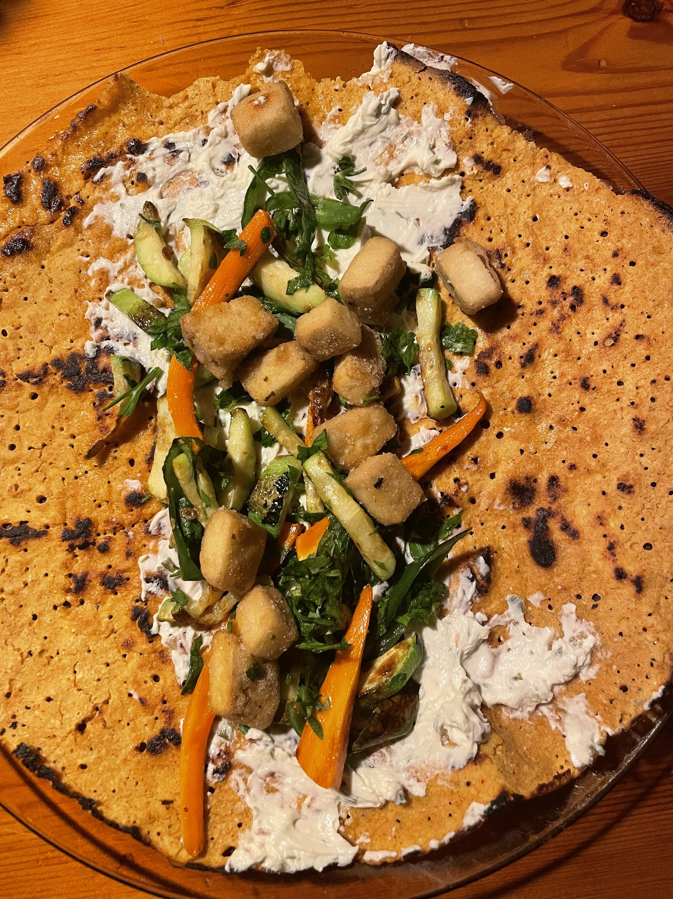

Crep soca con tofu, verduras, perejil y queso crema
Ingredients
2×
- 100 g de harina de garbanzo
- 250 ml de agua
- sal
- 1 cda de aceite de oliva
- 1 calabacín
- 1 zanahoria
- 150 g de tofu
- 2 cdas de queso crema
- perejil

Preparación
Paso 1
Mezclar 100 g de harina de garbanzo con 250 ml de agua, sal y 1 cda de aceite de oliva. Dejar reposar 10min.
Paso 2
Saltear 1 calabacín y 1 zanahoria en bastoncitos y 150 g de tofu en dados con un poco de aceite hasta que estén dorados.
Paso 3
Cocer la masa en una sartén grande bien caliente con aceite, unos minutos por cada lado.
Paso 4
Untar la crep con 2 cdas de queso crema y poner encima las verduras, el tofu y perejil picado.